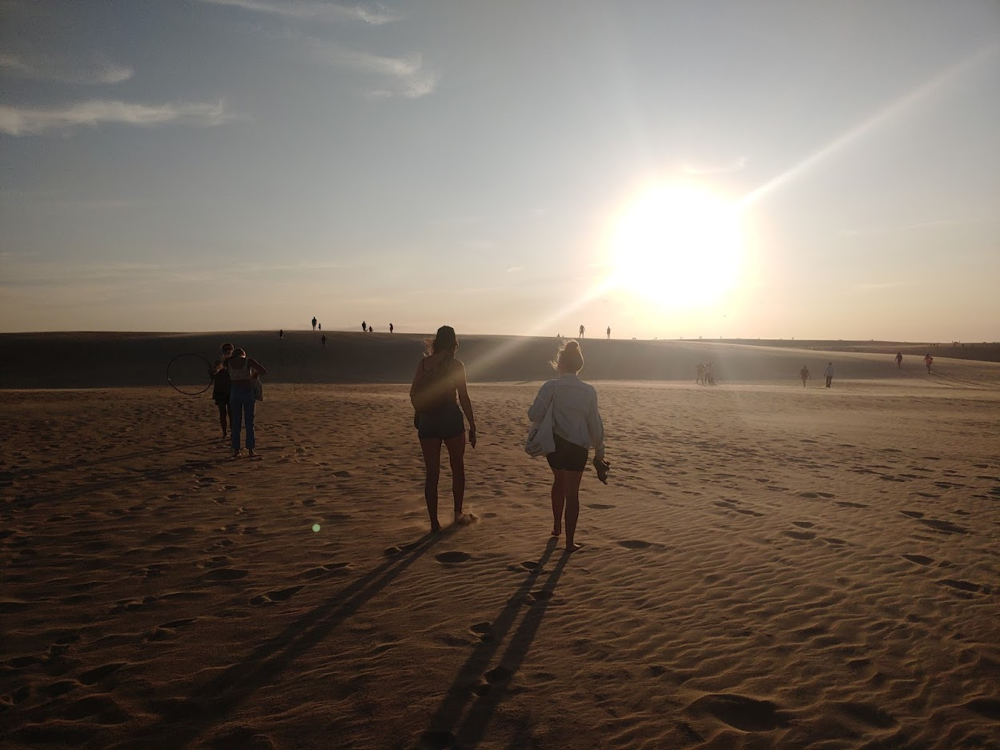
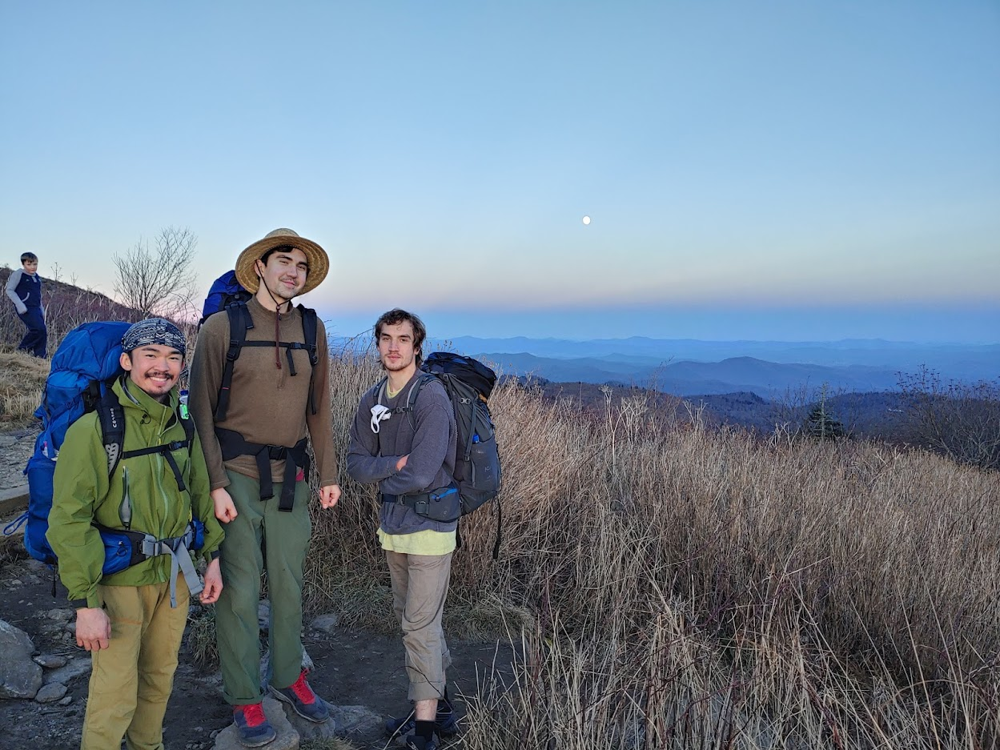
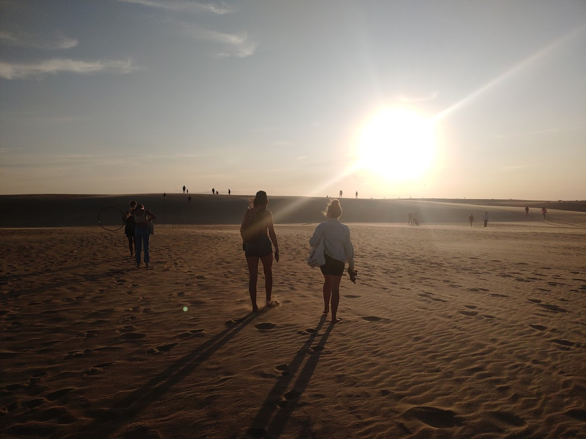
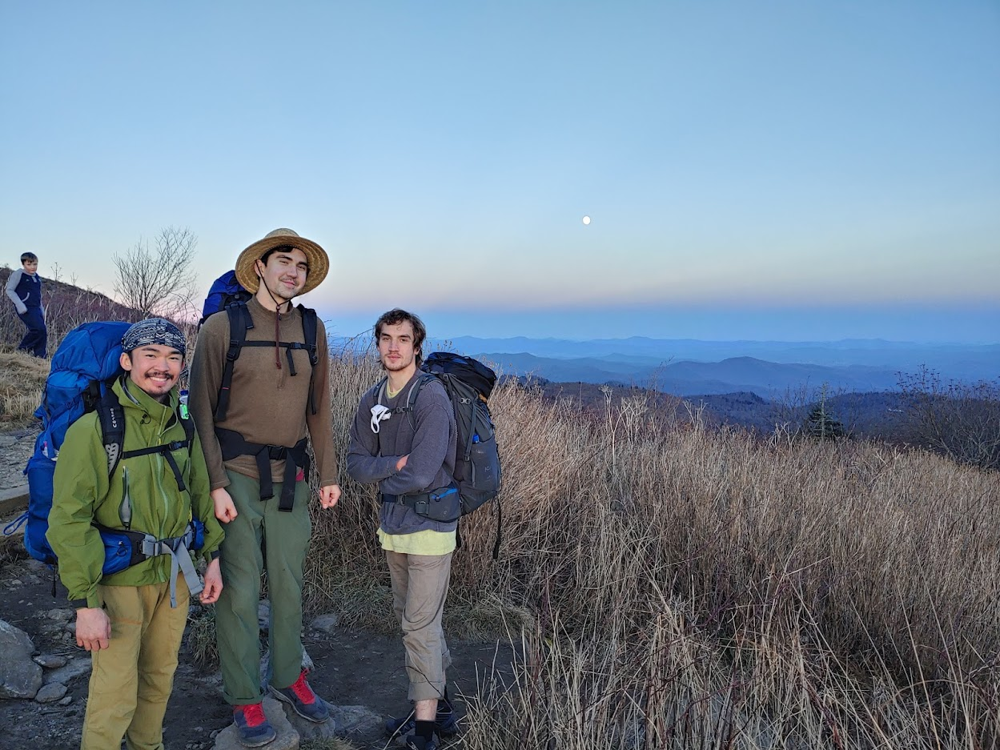
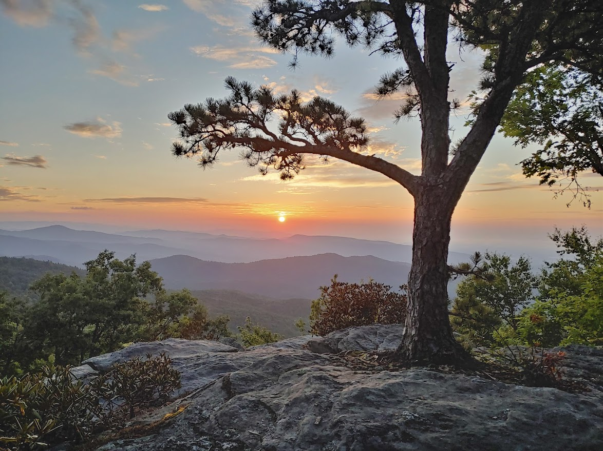
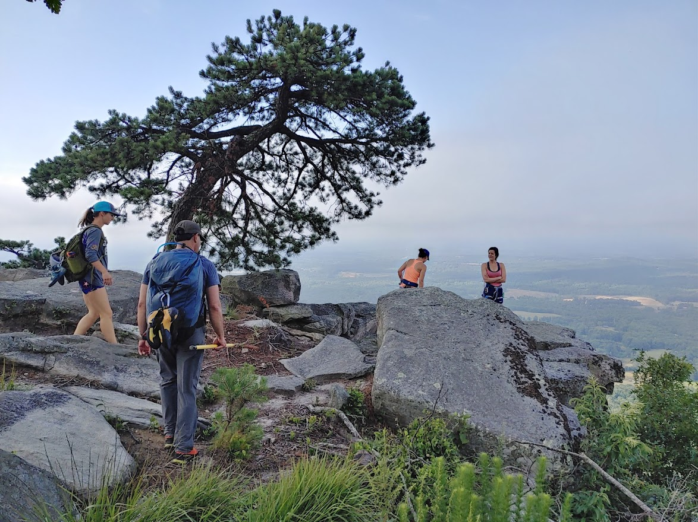
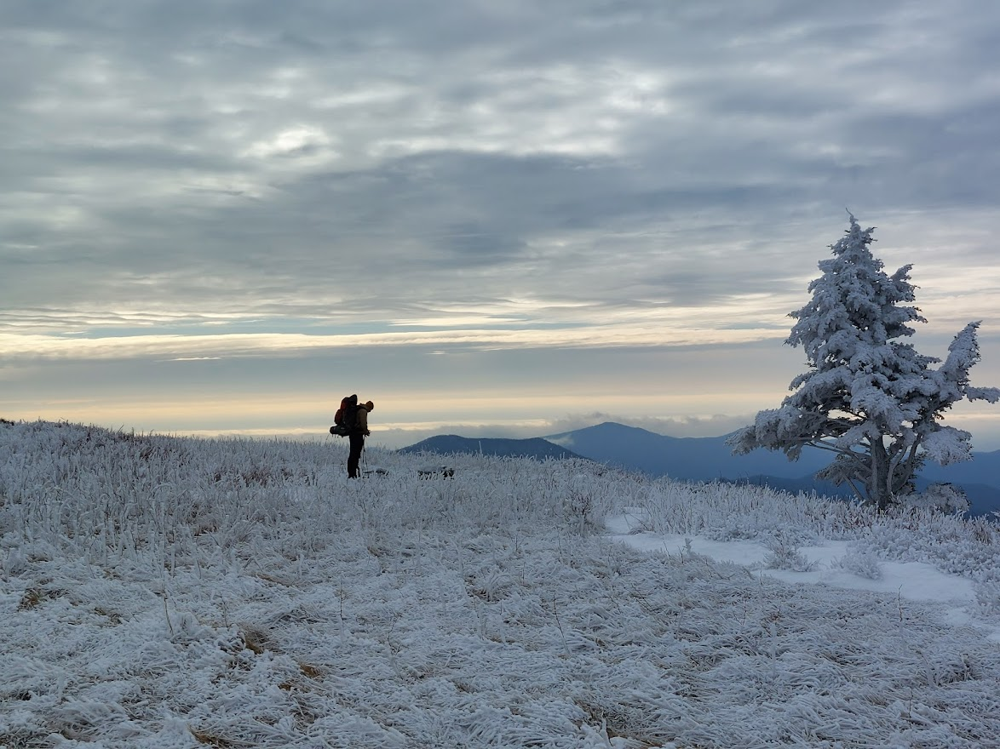

Adventures in the Carolinas
North Carolina is a state rich in natural wonder. From the stark cliffs of Linville Gorge to the barrier islands of the Outer Banks, I've been consistently amazed by what it has to offer. Here are a few of my favorite photos from two years living in this great state.
 





